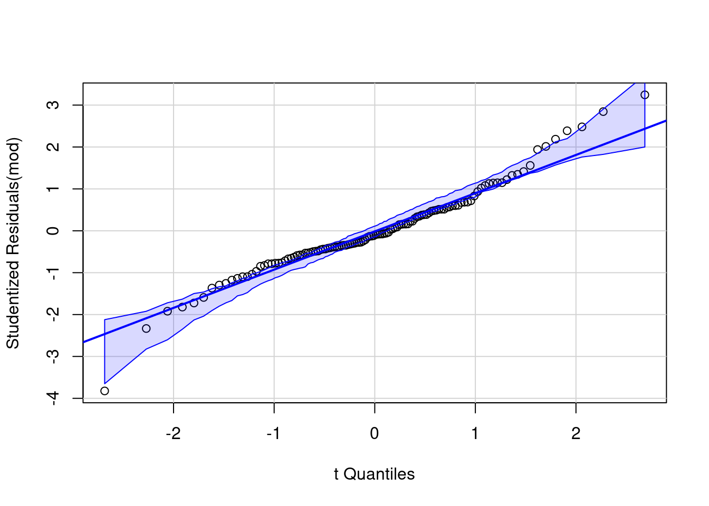

There’s a set of videos that walks through each section below. To make it easier for you to jump around the video examples, I cut the long video into smaller pieces and included them all in one YouTube playlist.
You can also watch the playlist (and skip around to different sections) here:
Study 1 - balanced data
We consider data from a replication by Chandler (2016) of Study 4a of Janiszewski and Uy (2008). Both studies measured the amount of adjustment when presented with vague or precise range of value for objects, with potential encouragement for adjusting more the value.
Description
Chandler (2016) described the effect in the replication report:
Janiszewski and Uy (2008) conceptualized people’s attempt to adjust following presentation of an anchor as movement along a subjective representation scale by a certain number of units. Precise numbers (e.g. $9.99) imply a finer-resolution scale than round numbers (e.g. $10). Consequently, adjustment along a subjectively finer resolution scale will result in less objective adjustment than adjustment by the same number of units along a subjectively coarse resolution scale.
The experiment is a 2 by 2 factorial design (two-way ANOVA) with anchor (either round or precise) and magnitude (0 for small, 1 for big adjustment) as experimental factors. A total of 120 students were recruited and randomly assigned to one of the four experimental sub-condition, for a total of 30 observations per subgroup (anchor, magnitude). The response variable is majust, the mean adjustment for the price estimate of the item. The dataset is available from the R package hecedsm as C16.
Code
# Load packageslibrary(dplyr) # data manipulationlibrary(ggplot2) # graphicslibrary(emmeans) # contrasts, etc.library(car) # companion to applied regression# Example of two-way ANOVA with balanced designdata(C16, package ="hecedsm")# Check for balancextabs(formula =~ anchor + magnitude,data = C16)
magnitude
anchor 0 1
round 30 30
precise 30 30
We can see that there are 30 observations in each group in the replication, as advertised.
Model fitting
In R, the function aov fits an analysis of variance model for balanced data. Analysis of variance are simple instances of linear regression models, and the main difference between fitting the model using aov and lm is the default parametrization used. In more general settings (including continuous covariates), we will use lm as a workshorse to fit the model, with an option to set up the contrasts so the output matches our expectations (and needs).
Code
# Fit two-way ANOVA modelmod <-aov(madjust ~ anchor * magnitude,data = C16)# Analysis of variance tablesummary(mod)
The model is fitted as before by specifying the response ~ explanatories: the * notation is a shortcut to specify anchor + magnitude + anchor:magnitude, with the last term separated by a semi-colon : denoting an interaction between two variables. Here, the experimental factors anchor and magnitude are crossed, as it is possible to be in both experimental groups simultaneously.
Interaction plots
The interaction.plot function in base R allows one to create an interaction (or profile) plot for a two-way design. More generally, we can simply compute the group means for each combination of the experimental conditions, map the mean response to the \(y\)-axis of a graph and add the experimental factors to other dimensions (\(x\)-axis, panel, color, etc.)
In our example, the interaction plot shows a large main effect for magnitude, a smaller one for anchor and no evidence of interaction — despite the uncertainty associated with the estimation, the lines are very close to being parallel. Overlaying the jitter observations shows there is quite a bit of spread, but with limited overlap. Despite the graphical evidence hinting that the interaction isn’t significant, we will fit the two-way analysis of variance model with the interaction unless we invalidate our statistical inference.
The emmip function allows one to return a plot automagically.
Because our dataset is balanced, the marginal means (the summary statistics obtained by grouping the data for a single factor) and the marginal effects (obtained by calculating the average cell means by either row or column) will coincide. There are multiple functions that allow one to obtain estimates means for cells, rows or columns, including functionalities, notably emmeans from the eponymous package and model.tables
Code
# Get grand mean, cell means, etc.model.tables(mod, type ="means")
Tables of means
Grand mean
0.001155778
anchor
anchor
round precise
0.08162 -0.07931
magnitude
magnitude
0 1
-0.26959 0.27190
anchor:magnitude
magnitude
anchor 0 1
round -0.1854 0.3487
precise -0.3537 0.1951
The output confirms our intuition that there is not much different from zero, with a strong effect for magnitude of adjustment and a significant, albeit smaller one, for anchor type.
Model assumptions
While the conclusions are probably unambiguous due to the large evidence, it would be useful to check the model assumptions.
The sample size is just enough to forego normality checks, but the quantile-quantile plot can be useful to detect outliers and extremes. Outside of one potential value much lower than it’s group mean, there is no cause for concern.
Code
car::qqPlot(mod, id =FALSE)

With 30 observations per group and no appearance of outlier, we need rather to worry about additivity and possibly heterogeneity arising from the treatment. Independence is plausible based on the context.
The Tukey-Anscombe plot of residuals against fitted values (the group means) indicate no deviation, but the variance appears to be larger for the two groups with a large adjustment. Because the response takes negative values, we can simply proceed with fitting a two-way analysis in which each of the subgroups has mean \(\mu_{ij}\) and standard deviation \(\sigma_{ij}\): in other words, only the data for each subgroup (anchor, magnitude) are used to estimate the summary statistics of that group.
# Equality of variance - Brown-Forsythecar::leveneTest(mod)
Levene's Test for Homogeneity of Variance (center = median)
Df F value Pr(>F)
group 3 2.8133 0.0424 *
116
---
Signif. codes: 0 '***' 0.001 '**' 0.01 '*' 0.05 '.' 0.1 ' ' 1
Given the Brown-Forsythe test output, we can try fitting a different variance in each group, as there are enough observations for this. The function gls in the nlme package fits such models; the weight argument being setup with a constant variance (~1) per each combination of the crossed factors anchor * magnitude.
Code
# Fit a variance per groupmod2 <- nlme::gls(model = madjust ~ anchor * magnitude,data = C16,weights = nlme::varIdent(form =~1| anchor * magnitude))# Different ANOVA - we use type II herecar::Anova(mod2, type =2)
We can see the unequal std. deviation per group when passing the model with unequal variance and unequal means and computing the estimated marginal means. The package emmeans automatically adjusts for these changes.
contrast estimate SE df t.ratio p.value
round - precise 0.161 0.0642 100 2.505 0.0138
Results are averaged over the levels of: magnitude
Degrees-of-freedom method: satterthwaite
Code
# To get a data frame with data# broom::tidy(marg_effect)
We can then pass the output to car::Anova to print the analysis of variance table. The \(p\)-value for the main effect of anchor is 0.014 in the equal variance model. With unequal variance, different tests give different values: the \(p\)-value is 0.009 if we use type II effects (the correct choice here), 0.035 with type III effects2 and the emmeans package returns Welch’s test for the pairwise difference with Satterwaite’s degree of freedom approximation if we average over magnitude to account for the difference in variance, this time with a \(p\)-value of 0.014. These differences in output are somewhat notable: with borderline statistical significance, they may lead to different conclusions if one blindly dichotomize the results. Clearly stating which test and how the results are obtained is crucial for transparent reporting, as is providing the code and data. Let your readers make their own mind by reporting \(p\)-values.
Reporting
Regardless of the model, it should be clearly stated that there is some evidence of heterogeneity. We should also report sample size per group, mention the repartition (\(n=30\) per group).
In the present case, we can give information about the main effects and stop here, but giving an indication about the size of the adjustment (by reporting estimated marginal means) is useful. Note that emmeans gives a (here spurious) warning about the main effects (row or column average) since there is a potential interaction — as we all but ruled out the latter, we proceed nevertheless.
There are many different options to get the same results with emmeans. The specs indicates the list of factors which we want to keep, whereas by gives the one we want to have separate analysis for. In formula, we could get the simple effects for anchor by level of magnitude using ~ anchor | magnitude, or set specs = anchor and by = magnitude. We can pass the result to pairs to obtain pairwise differences.
Code
# Simple effects for anchoremm_simple <- emmeans::emmeans(object = mod,specs ="anchor",by ="magnitude")# Compute pairwise differences within each magnitudepairs(emm_simple)
By default, emmeans will compute adjustments for pairwise difference using Tukey’s honest significant difference method if there are more than one pairwise comparison. The software cannot easily guess the degrees of freedom, the number of tests, etc.
There are also tests which are not of interest: for example, one probably wouldn’t want to compute the difference between the adjustment for (small magnitude and round) versus (large magnitude and precise).
If we were interested in looking at all pairwise differences, we could keep all of the cells means.
Notice now the mention about Tukey’s effect. When there is heterogeneity of variance or unbalanced effects, the actual method employed is called Games-Howell correction.
Study 2 - unbalanced data
We now reproduce the results of Study 1 of Maglio & Polman (2014). Data were obtained from the Open Science Foundation and are available in the MP14_S1 dataset in package hecedsm.
We carried out a 2 (orientation: toward, away from) × 4 (station: Spadina, St. George, Bloor-Yonge, Sherbourne) analysis of variance (ANOVA) on closeness ratings.
Code
data(MP14_S1, package ="hecedsm")xtabs(~ direction + station, data = MP14_S1)
station
direction Spadina St. George Bloor-Yonge Sherbourne
east 26 26 23 26
west 25 25 26 25
The counts are not balanced, but not far from being equal in each group.
Based on the actual study, it is quite clear we expect there will be an interaction if there is an actual effect. Lack of interaction would entail that subjective distance is perceived the same way regardless of the direction of travel.
Model assumptions
Since the data are unbalanced, we can fit the model using lm. The default parametrization of the linear model uses the first alphanumerical value for the factor as reference category and coefficients encode differences relative to this particular average. We can obtain the sum-to-zero by setting the option contr.sum3
# Set up contrastsoptions(contrasts =c("contr.sum", "contr.poly"))model <-lm(distance ~ station*direction, data = MP14_S1)summary(model) # the coefficients are global mean
Call:
lm(formula = distance ~ station * direction, data = MP14_S1)
Residuals:
Min 1Q Median 3Q Max
-2.6538 -0.6400 0.1154 0.3913 2.8077
Coefficients:
Estimate Std. Error t value Pr(>|t|)
(Intercept) 2.65916 0.07294 36.458 < 2e-16 ***
station1 0.48776 0.12587 3.875 0.000146 ***
station2 -0.45455 0.12587 -3.611 0.000388 ***
station3 -0.75866 0.12771 -5.941 1.29e-08 ***
direction1 0.04109 0.07294 0.563 0.573870
station1:direction1 0.46584 0.12587 3.701 0.000280 ***
station2:direction1 0.52353 0.12587 4.159 4.79e-05 ***
station3:direction1 -0.33289 0.12771 -2.607 0.009853 **
---
Signif. codes: 0 '***' 0.001 '**' 0.01 '*' 0.05 '.' 0.1 ' ' 1
Residual standard error: 1.036 on 194 degrees of freedom
Multiple R-squared: 0.3813, Adjusted R-squared: 0.359
F-statistic: 17.08 on 7 and 194 DF, p-value: < 2.2e-16
Code
# Test only the interactioncar::Anova(model, type =3)
Anova Table (Type III tests)
Response: distance
Sum Sq Df F value Pr(>F)
(Intercept) 1426.15 1 1329.1917 < 2.2e-16 ***
station 77.58 3 24.1005 2.665e-13 ***
direction 0.34 1 0.3173 0.5739
station:direction 52.41 3 16.2832 1.765e-09 ***
Residuals 208.15 194
---
Signif. codes: 0 '***' 0.001 '**' 0.01 '*' 0.05 '.' 0.1 ' ' 1
Model assumptions
We can use type II or type III tests: here, because the interaction term is significant, we could look at simple effects but these are not of scientific interest. Rather, we compute the cell averages and proceed with our contrast setup.
Because of the discreteness of the data (a Likert scale ranging from 1 to 5), there is limited potential for outlyingness. If you look at the normal quantile-quantile plot, you should see a marked staircase pattern due to the ties. Brown–Forsythe’s test gives no evidence of unequal variance per group, so we proceed with the model.
Interaction plot
While we can do plots ourselves, the emmip function allows us to return a nice looking profile plot with ggplot2.
# Interaction plot # average of each subgroup, with +/- 1 std. errorMP14_S1 |>group_by(direction, station) |>summarize(mean =mean(distance),se =sigma(model) /sqrt(n()),lower = mean - se,upper = mean + se) |>ggplot(mapping =aes(x = station,y = mean, group = direction,col = direction)) +geom_line() +geom_errorbar(aes(ymin = lower, ymax = upper),width =0.2) +geom_point() +scale_colour_grey() +labs(title ="subjective distance",subtitle ="mean (1 std. error)",x ="subway station",y ="",caption ="stations are ordered from west to east") +theme_classic() +theme(legend.position ="top")
Contrasts
If the data lend some support for this claim, we could consider the following follow-up questions:
symmetry
whether the average perceived distance for St. George (east) and Bloor–Yonge (west) is the same as vice-versa (both one station away from Bay).
same, but for Spadina and Sherbourne which are two stations away from Bay.
if the perceived distance for stations Spadina or Sherbourne, which are two away from Bay, are viewed as being twice as distance as St. George and Bloor–Yonge.
For the experiment to make sense, we should check that travel time or distance is indeed roughly the same between each station. These hypotheses can be expressed in terms of contrasts.
In emmeans, we keep both factors in the model and begin by computing the cell means and looking at the order of the factors and ordering of the levels to properly set our contrast vectors.
The hypothesis of symmetry is slightly complicated, as we want to test a model which has the same perceived distance for distance, but comparing stations one apart and two apart in the same direction of travel. This leads to four contrast vectors, but we set up the hypothesis test to look at them simultaneously using an \(F\)-test. If we impose same mean perceived distance for each station with the symmetry, we would have four average instead of the eight cells: the null distribution for the mean comparison will be a Fisher distribution with \(\nu_1=8-4=4\) degrees of freedom.
contrast_list <-list("2 station (opposite)"=c(1, 0, 0, 0, 0, 0, 0, -1),"1 station (opposite)"=c(0, 0, 1, 0, 0, -1, 0, 0),"2 station (travel)"=c(0, 1, 0, 0, 0, 0, -1, 0),"1 station (travel)"=c(0, 0, 0, 1, -1, 0, 0, 0))# Hypothesis test (symmetry)emm |>contrast(method = contrast_list) |>test(joint =TRUE)
df1 df2 F.ratio p.value
4 194 1.416 0.2300
Perhaps unsurprisingly, there is not much difference and we cannot detect departure from symmetry.
The other hypothesis tests, which look at perceived differences one direction or another, quantify the difference in subjective distance depending on whether the station is in the direction of travel or opposite.
Hypotheses 3 and 4 could be tested jointly, using the same trick we employed for symmetry to impose the linear restrictions on the parameters. We will consider only the pairwise differences in the sequel.
Since we consider arbitrary contrasts between the means of the eight cells, we can account for multiple testing within the family by using Scheffé’s method. In emmeans, the adjust = "scheffe" argument sets up the contrasts, but the output will be incorrect unless we specify the number of groups (for main effects, \(n_a-1\), for all cells, \(n_an_b-1\)) through scheffe.rank.
To account for the other tests, we can also reduce the level to decrease the probability of making a type I error.
Code
custom_contrasts <-list("2 station, opposite vs same"=c(1, -1, 0, 0, 0, 0, -1, 1),"1 station, opposite vs same"=c(0, 0, 1, -1, -1, 1, 0, 0),"1 vs 2 station (opposite)"=c(-1, 0, 2, 0, 0, 2, 0, -1),"1 vs 2 station (same)"=c(0, -1, 0, 2, 2, 0, -1, 0))# Set up contrasts with correctioncont_emm <-contrast(object = emm, method = custom_contrasts,adjust ="scheffe")# Tests and p-valuescont_emm |>test(scheffe.rank =7)
contrast estimate SE df t.ratio p.value
2 station, opposite vs same 2.24 0.410 194 5.470 0.0002
1 station, opposite vs same 1.71 0.415 194 4.129 0.0206
1 vs 2 station (opposite) 2.27 0.644 194 3.525 0.0942
1 vs 2 station (same) 1.09 0.665 194 1.636 0.9120
P value adjustment: scheffe method with rank 7
Code
# Tests with confidence intervalscont_emm |>confint(scheffe.rank =7,level =0.99)
contrast estimate SE df lower.CL upper.CL
2 station, opposite vs same 2.24 0.410 194 0.450 4.04
1 station, opposite vs same 1.71 0.415 194 -0.102 3.53
1 vs 2 station (opposite) 2.27 0.644 194 -0.546 5.08
1 vs 2 station (same) 1.09 0.665 194 -1.821 4.00
Confidence level used: 0.99
Conf-level adjustment: scheffe method with rank 7
Even with a correction for multiple testing, there is strong difference in perceived distance for one station away (direction of travel vs opposite) and similarly for two stations. There is mild evidence that, in one direction, the perceived distance between stations is not equal. A potential criticism, in addition to the design of the scale, would be about real distance between stations may not be the same.
References
Chandler, J. J. (2016). Replication of Janiszewski & Uy (2008, Psychological Science, study 4b). https://osf.io/aaudl
Maglio, S. J., & Polman, E. (2014). Spatial orientation shrinks and expands psychological distance. Psychological Science, 25(7), 1345–1352. https://doi.org/10.1177/0956797614530571
Footnotes
In general, for unbalanced data, one would use car::Anova with type = 2 or type = 3 effects.↩︎
The type 3 effects compare the model with interactions and main effects to one that includes the interaction, but removes the main effects. Not of interest in the present context.↩︎
The second term specifies the default option for continuous variables.↩︎
Source Code
---title: "Two-way analysis of variance"linktitle: "Two-way ANOVA"type: docseditor_options: chunk_output_type: consoleexecute: echo: true eval: true message: false warning: false cache: false fig-align: 'center' out-width: '80%'---```{r slides-videos, echo=FALSE, include=FALSE}source(here::here("R", "youtube-playlist.R"))playlist_id <-"PLUB8VZzxA8ItJKq70HCdYrRcsDUsJYKhb"slide_details <- tibble::tribble(~title, ~youtube_id,"ANOVA table", "pxQgRTWwITI","Interaction plot", "rYudu_vns6I","Contrasts and marginal means", "0ifni3rNOss","Effect size and power", "jcqpe3Z-YNs","SPSS walkthrough", "lxVJAzaBHyY")```# VideosThe **R** code [can be downloaded here](/example/twowayanova.R) and the [SPSS code here](/example/twoway.sps).```{r show-youtube-list, echo=FALSE, results="asis"}youtube_list(slide_details, playlist_id, example =TRUE)```## Study 1 - balanced dataWe consider data from a replication by Chandler (2016) of Study 4a of Janiszewski and Uy (2008). Both studies measured the amount of adjustment when presented with vague or precise range of value for objects, with potential encouragement for adjusting more the value.### Description@Chandler:2016 described the effect in the replication report:> Janiszewski and Uy (2008) conceptualized people’s attempt to adjust following presentation of an anchor as movement along a subjective representation scale by a certain number of units. Precise numbers (e.g. $9.99) imply a finer-resolution scale than round numbers (e.g. $10). Consequently, adjustment along a subjectively finer resolution scale will result in less objective adjustment than adjustment by the same number of units along a subjectively coarse resolution scale.The experiment is a 2 by 2 factorial design (two-way ANOVA) with `anchor` (either round or precise) and `magnitude` (`0` for small, `1` for big adjustment) as experimental factors. A total of 120 students were recruited and randomly assigned to one of the four experimental sub-condition, for a total of 30 observations per subgroup (`anchor`, `magnitude`). The response variable is `majust`, the mean adjustment for the price estimate of the item. The dataset is available from the **R** package `hecedsm` as `C16`.```{r}#| eval: true#| echo: true# Load packageslibrary(dplyr) # data manipulationlibrary(ggplot2) # graphicslibrary(emmeans) # contrasts, etc.library(car) # companion to applied regression# Example of two-way ANOVA with balanced designdata(C16, package ="hecedsm")# Check for balancextabs(formula =~ anchor + magnitude,data = C16)```We can see that there are 30 observations in each group in the replication, as advertised.### Model fittingIn **R**, the function `aov` fits an analysis of variance model for *balanced data*. Analysis of variance are simple instances of linear regression models, and the main difference between fitting the modelusing `aov` and `lm` is the default parametrization used. In more general settings (including continuous covariates), we will use `lm` as a workshorse to fit the model, with an option to set up the contrasts so the output matches our expectations (and needs).```{r}# Fit two-way ANOVA modelmod <-aov(madjust ~ anchor * magnitude,data = C16)# Analysis of variance tablesummary(mod)```The model is fitted as before by specifying the `response ~ explanatories`: the `*` notation is a shortcut to specify `anchor + magnitude + anchor:magnitude`, with the last term separated by a semi-colon `:` denoting an interaction between two variables. Here, the experimental factors `anchor` and `magnitude` are crossed, as it is possible to be in both experimental groups simultaneously.### Interaction plotsThe `interaction.plot` function in base **R** allows one to create an interaction (or profile) plot for a two-way design. More generally, we can simply compute the group means for each combination of the experimental conditions, map the mean response to the $y$-axis of a graph and add the experimental factors to other dimensions ($x$-axis, panel, color, etc.) ```{r}C16 |>ggplot(mapping =aes(x = anchor,y = madjust,color = magnitude)) +geom_jitter(width =0.1,alpha =0.1) +stat_summary(aes(group = magnitude), fun = mean, geom ="line") +# Change position of labelslabs(y ="",subtitle ="Mean adjustment") +theme_classic() +# change themetheme(legend.position ="bottom")```In our example, the interaction plot shows a large main effect for `magnitude`, a smaller one for `anchor` and no evidence of interaction --- despite the uncertainty associated with the estimation, the lines are very close to being parallel. Overlaying the jitter observations shows there is quite a bit of spread, but with limited overlap. Despite the graphical evidence hinting that the interaction isn't significant, we will fit the two-way analysis of variance model with the interaction unless we invalidate our statistical inference.The `emmip` function allows one to return a plot automagically.```{r}# Interaction plotemmeans::emmip(mod, magnitude ~ anchor, CIs =TRUE) +theme_minimal()```### Estimated marginal meansBecause our dataset is balanced, the marginal means (the summary statistics obtained by grouping the data for a single factor) and the marginal effects (obtained by calculating the average cell means by either row or column) will coincide. There are multiple functions that allow one to obtain estimates means for cells, rows or columns, including functionalities, notably `emmeans` from the eponymous package and `model.tables````{r}# Get grand mean, cell means, etc.model.tables(mod, type ="means")# Cell meansemmeans(object = mod, specs =c("anchor", "magnitude"),type ="response")# Marginal meansemmeans(object = mod, specs ="anchor", type ="response")emmeans(object = mod, specs ="anchor", type ="response")# These match summary statisticsC16 |>group_by(magnitude) |>summarize(margmean =mean(madjust))C16 |>group_by(anchor) |>summarize(margmean =mean(madjust))```Since the data are balanced, we can look at the (default) analysis of variance table produced using`anova` function^[In general, for unbalanced data, one would use `car::Anova` with `type = 2` or `type = 3` effects.]```{r}anova(mod)```The output confirms our intuition that there is not much different from zero, with a strong effect for magnitude of adjustment and a significant, albeit smaller one, for anchor type.### Model assumptionsWhile the conclusions are probably unambiguous due to the large evidence, it would be useful to check the model assumptions. The sample size is just enough to forego normality checks, but the quantile-quantile plot can be useful to detect outliers and extremes. Outside of one potential value much lower than it's group mean, there is no cause for concern.```{r}car::qqPlot(mod, id =FALSE)```With 30 observations per group and no appearance of outlier, we need rather to worry about additivity and possibly heterogeneity arising from the treatment. Independence is plausible based on the context.The Tukey-Anscombe plot of residuals against fitted values (the group means) indicate no deviation, but the variance appears to be larger for the two groups with a large adjustment. Because the response takes negative values, we can simply proceed with fitting a two-way analysis in which each of the subgroups has mean $\mu_{ij}$ and standard deviation $\sigma_{ij}$: in other words, only the data for each subgroup (`anchor`, `magnitude`) are used to estimate the summary statistics of that group. ```{r}# Evidence of unequal varianceggplot(data =data.frame(residuals =resid(mod),fitted =fitted(mod)),mapping =aes(x = fitted,y = residuals)) +geom_jitter(width =0.03, height =0) +theme_classic()# Equality of variance - Brown-Forsythecar::leveneTest(mod) ```Given the Brown-Forsythe test output, we can try fitting a different variance in each group, as there are enough observations for this. The function `gls` in the `nlme` package fits such models; the weight argument being setup with a constant variance (`~1`) per each combination of the crossed factors `anchor * magnitude`.```{r}# Fit a variance per groupmod2 <- nlme::gls(model = madjust ~ anchor * magnitude,data = C16,weights = nlme::varIdent(form =~1| anchor * magnitude))# Different ANOVA - we use type II herecar::Anova(mod2, type =2)```We can see the unequal std. deviation per group when passing the model with unequal variance and unequal means and computing the estimated marginal means. The package `emmeans` automatically adjusts for these changes.```{r}emmeans(object = mod2, specs =c("anchor", "magnitude"))# Compute pairwise difference for anchormarg_effect <-emmeans(object = mod2, specs ="anchor") |>pairs()marg_effect# To get a data frame with data# broom::tidy(marg_effect)```We can then pass the output to `car::Anova` to print the analysis of variance table. The $p$-value for the main effect of `anchor` is `r round(anova(mod)[1,5], 3)` in the equal variance model. With unequal variance, different tests give different values: the $p$-value is `r round(car::Anova(mod2, type = 2)[1,3], 3)` if we use type II effects (the correct choice here), `r round(car::Anova(mod2, type = 3)[2,3], 3)` with type III effects^[The type 3 effects compare the model with interactions and main effects to one that includes the interaction, but removes the main effects. Not of interest in the present context.] and the `emmeans` package returns Welch's test for the pairwise difference with Satterwaite's degree of freedom approximation if we average over `magnitude` to account for the difference in variance, this time with a $p$-value of `r round(broom::tidy(marg_effect)$p.value, 3)`. These differences in output are somewhat notable: with *borderline statistical significance*, they may lead to different conclusions if one blindly dichotomize the results. Clearly stating which test and how the results are obtained is crucial for transparent reporting, as is providing the code and data. Let your readers make their own mind by reporting $p$-values.### ReportingRegardless of the model, it should be clearly stated that there is some evidence of heterogeneity. We should also report sample size per group, mention the repartition ($n=30$ per group).In the present case, we can give information about the main effects and stop here, but giving an indication about the size of the adjustment (by reporting estimated marginal means) is useful. Note that `emmeans` gives a (here spurious) warning about the main effects (row or column average) since there is a potential interaction --- as we all but ruled out the latter, we proceed nevertheless.```{r}emm_marg <- emmeans::emmeans(object = mod2,specs ="anchor")```There are many different options to get the same results with `emmeans`. The `specs` indicates the list of factors which we want to keep, whereas `by` gives the one we want to have separate analysis for. In formula, we could get the simple effects for `anchor` by level of `magnitude` using `~ anchor | magnitude`, or set `specs = anchor` and `by = magnitude`. We can pass the result to `pairs` to obtain pairwise differences.```{r}# Simple effects for anchoremm_simple <- emmeans::emmeans(object = mod,specs ="anchor",by ="magnitude")# Compute pairwise differences within each magnitudepairs(emm_simple)```### Multiplicity adjustmentBy default, `emmeans` will compute adjustments for pairwise difference using Tukey's honest significant difference method if there are more than one pairwise comparison. The software cannot easily guess the degrees of freedom, the number of tests, etc.There are also tests which are not of interest: for example, one probably wouldn't want to compute the difference between the adjustment for (small magnitude and round) versus (large magnitude and precise).If we were interested in looking at all pairwise differences, we could keep all of the cells means.```{r}emmeans(object = mod2, specs =c("magnitude", "anchor"), contr ="pairwise")```Notice now the mention about Tukey's effect. When there is heterogeneity of variance or unbalanced effects, the actual method employed is called **Games-Howell** correction.## Study 2 - unbalanced dataWe now reproduce the results of Study 1 of @Maglio/Polman:2014. Data were obtained from the Open Science Foundation and are available in the `MP14_S1` dataset in package `hecedsm`.> We carried out a 2 (orientation: toward, away from) × 4 (station: Spadina, St. George, Bloor-Yonge, Sherbourne) analysis of variance (ANOVA) on closeness ratings.```{r}data(MP14_S1, package ="hecedsm")xtabs(~ direction + station, data = MP14_S1)```The counts are not balanced, but not far from being equal in each group.Based on the actual study, it is quite clear we expect there will be an interaction if there is an actual effect. Lack of interaction would entail that subjective distance is perceived the same way regardless of the direction of travel. ### Model assumptionsSince the data are unbalanced, we can fit the model using `lm`. The default parametrization of the linear model uses the first alphanumerical value for the factor as reference category and coefficients encode differences relative to this particular average. We can obtain the sum-to-zero by setting the option `contr.sum`^[The second term specifies the default option for continuous variables.]```{r}str(MP14_S1) # look at data# Set up contrastsoptions(contrasts =c("contr.sum", "contr.poly"))model <-lm(distance ~ station*direction, data = MP14_S1)summary(model) # the coefficients are global mean# Test only the interactioncar::Anova(model, type =3) ```### Model assumptionsWe can use type II or type III tests: here, because the interaction term is significant, we could look at simple effects but these are not of scientific interest. Rather, we compute the cell averages and proceed with our contrast setup.Because of the discreteness of the data (a Likert scale ranging from 1 to 5), there is limited potential for outlyingness. If you look at the normal quantile-quantile plot, you should see a marked staircase pattern due to the ties. Brown--Forsythe's test gives no evidence of unequal variance per group, so we proceed with the model.### Interaction plotWhile we can do plots ourselves, the `emmip` function allows us to return a nice looking profile plot with `ggplot2`.```{r}emmeans::emmip(object = model, # trace.factor ~ x.factorformula = direction ~ station,CIs =TRUE) +theme_minimal()``````{r}# Interaction plot # average of each subgroup, with +/- 1 std. errorMP14_S1 |>group_by(direction, station) |>summarize(mean =mean(distance),se =sigma(model) /sqrt(n()),lower = mean - se,upper = mean + se) |>ggplot(mapping =aes(x = station,y = mean, group = direction,col = direction)) +geom_line() +geom_errorbar(aes(ymin = lower, ymax = upper),width =0.2) +geom_point() +scale_colour_grey() +labs(title ="subjective distance",subtitle ="mean (1 std. error)",x ="subway station",y ="",caption ="stations are ordered from west to east") +theme_classic() +theme(legend.position ="top")```### ContrastsIf the data lend some support for this claim, we could consider the following follow-up questions:- symmetry- whether the average perceived distance for St. George (east) and Bloor--Yonge (west) is the same as vice-versa (both one station away from Bay).- same, but for Spadina and Sherbourne which are two stations away from Bay.- if the perceived distance for stations Spadina or Sherbourne, which are two away from Bay, are viewed as being twice as distance as St. George and Bloor--Yonge.For the experiment to make sense, we should check that travel time or distance is indeed roughly the same between each station. These hypotheses can be expressed in terms of contrasts.In `emmeans`, we keep both factors in the model and begin by computing the cell means and looking at the order of the factors and ordering of the levels to properly set our contrast vectors.The hypothesis of symmetry is slightly complicated, as we want to test a model which has the same perceived distance for distance, but comparing stations one apart and two apart in the same direction of travel. This leads to four contrast vectors, but we set up the hypothesis test to look at them simultaneously using an $F$-test. If we impose same mean perceived distance for each station with the symmetry, we would have four average instead of the eight cells: the null distribution for the mean comparison will be a Fisher distribution with $\nu_1=8-4=4$ degrees of freedom.```{r}emm <-emmeans(model, specs =c("direction", "station"))levels(emm)contrast_list <-list("2 station (opposite)"=c(1, 0, 0, 0, 0, 0, 0, -1),"1 station (opposite)"=c(0, 0, 1, 0, 0, -1, 0, 0),"2 station (travel)"=c(0, 1, 0, 0, 0, 0, -1, 0),"1 station (travel)"=c(0, 0, 0, 1, -1, 0, 0, 0))# Hypothesis test (symmetry)emm |>contrast(method = contrast_list) |>test(joint =TRUE)```Perhaps unsurprisingly, there is not much difference and we cannot detect departure from symmetry.The other hypothesis tests, which look at perceived differences one direction or another, quantify the difference in subjective distance depending on whether the station is in the direction of travel or opposite.\begin{align*}\mathscr{H}_{01} &: \mu_{\text{E, SG}} + \mu_{\text{W, BY}} = \mu_{\text{W, SG}} +\mu_{\text{E, BY}} \\\mathscr{H}_{02} &: \mu_{\text{E, Sp}} +\mu_{\text{W, Sh}} = \mu_{\text{W, Sp}} + \mu_{\text{E, Sh}} \\\mathscr{H}_{03} &: 2(\mu_{\text{E, SG}} + \mu_{\text{W, BY}}) = \mu_{\text{E, Sp}} + \mu_{\text{W, Sh}} \\\mathscr{H}_{04} &: 2(\mu_{\text{W, SG}} + \mu_{\text{E, BY}}) = \mu_{\text{W, Sp}} + \mu_{\text{E, Sh}} \end{align*}Hypotheses 3 and 4 could be tested jointly, using the same trick we employed for symmetry to impose the linear restrictions on the parameters. We will consider only the pairwise differences in the sequel.Since we consider arbitrary contrasts between the means of the eight cells, we can account for multiple testing within the family by using Scheffé's method. In `emmeans`, the `adjust = "scheffe"` argument sets up the contrasts, but the output will be incorrect unless we specify the number of groups (for main effects, $n_a-1$, for all cells, $n_an_b-1$) through `scheffe.rank`.To account for the other tests, we can also reduce the level to decrease the probability of making a type I error.```{r}custom_contrasts <-list("2 station, opposite vs same"=c(1, -1, 0, 0, 0, 0, -1, 1),"1 station, opposite vs same"=c(0, 0, 1, -1, -1, 1, 0, 0),"1 vs 2 station (opposite)"=c(-1, 0, 2, 0, 0, 2, 0, -1),"1 vs 2 station (same)"=c(0, -1, 0, 2, 2, 0, -1, 0))# Set up contrasts with correctioncont_emm <-contrast(object = emm, method = custom_contrasts,adjust ="scheffe")# Tests and p-valuescont_emm |>test(scheffe.rank =7)# Tests with confidence intervalscont_emm |>confint(scheffe.rank =7,level =0.99)```Even with a correction for multiple testing, there is strong difference in perceived distance for one station away (direction of travel vs opposite) and similarly for two stations. There is mild evidence that, in one direction, the perceived distance between stations is not equal. A potential criticism, in addition to the design of the scale, would be about real distance between stations may not be the same.```{r}#| eval: false#| echo: false#| out.width: '40%'knitr::include_graphics("/figures/Toronto_subway.png")```## References